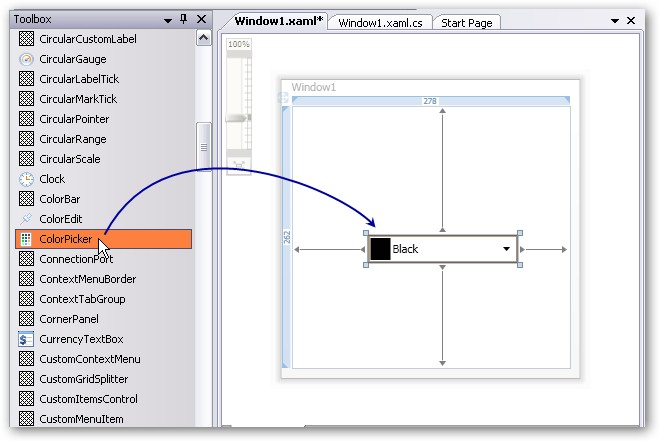
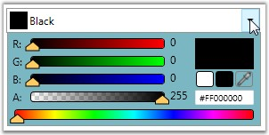

There are two possible ways to create a ColorPicker control.
1. Through Designer
To create a ColorPicker control through designer, follow the below steps.
1. Drag the ColorPicker control from the toolbox onto the design area.

Figure 148: ColorPicker control dragged from the Toolbox to the designer
2. Set the properties for the ColorPicker in the design mode, using the Smart Tag feature.
2. Programmatically
You can create a ColorPicker control either by using XAML code or C# code. Use the following code snippet to create a ColorPicker control.
|
[XAML]
<!-- Adding ColorPicker --> <syncfusion:ColorPicker Name="colorPicker"/> |
|
[C#]
//Creating an instance of color picker ColorPicker colorPicker = new ColorPicker();
//Adding control to the window this.Content = colorPicker; |

Figure 149: ColorPicker Control